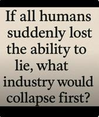

0


This month saw results from a yearlong global study of "potential negative risks that generative AI poses to student". The study (by the Brookings Institution's Center for Universal Education) also suggests how to prevent risks and maximize benefits:
After interviews, focus groups, and consultations with over 500 students, teachers, parents, education leaders, and technologists across 50 countries, a close review of over 400 studies, and a Delphi panel, we find that at this point in its trajectory, the risks of utilizing generative AI in children's education overshadow its benefits.
"At the top of Brookings' list of risks is the negative effect AI can have on children's cognitive growth," reports NPR — "how they learn new skills and perceive and solve problems."
The report describes a kind of doom loop of AI dependence, where students increasingly off-load their own thinking onto the technology, leading to the kind of cognitive decline or atrophy more commonly associated with aging brains... As one student told the researchers, "It's easy. You don't need to (use) your brain." The report offers a surfeit of evidence to suggest that students who use generative AI are already seeing declines in content knowledge, critical thinking and even creativity. And this could have enormous consequences if these young people grow into adults without learning to think critically...
Survey responses revealed deep concern that use of AI, particularly chatbots, "is undermining students' emotional well-being, including their ability to form relationships, recover from setbacks, and maintain mental health," the report says. One of the many problems with kids' overuse of AI is that the technology is inherently sycophantic — it has been designed to reinforce users' beliefs... Winthrop offers an example of a child interacting with a chatbot, "complaining about your parents and saying, 'They want me to wash the dishes — this is so annoying. I hate my parents.' The chatbot will likely say, 'You're right. You're misunderstood. I'm so sorry. I understand you.' Versus a friend who would say, 'Dude, I wash the dishes all the time in my house. I don't know what you're complaining about. That's normal.' That right there is the problem."
AI did have some advantages, the article points out:
The report says another benefit of AI is that it allows teachers to automate some tasks: "generating parent emails ... translating materials, creating worksheets, rubrics, quizzes, and lesson plans" — and more. The report cites multiple research studies that found important time-saving benefits for teachers, including one U.S. study that found that teachers who use AI save an average of nearly six hours a week and about six weeks over the course of a full school year...
AI can also help make classrooms more accessible for students with a wide range of learning disabilities, including dyslexia. But "AI can massively increase existing divides" too, [warns Rebecca Winthrop, one of the report's authors and a senior fellow at Brookings]. That's because the free AI tools that are most accessible to students and schools can also be the least reliable and least factually accurate... "[T]his is the first time in ed-tech history that schools will have to pay more for more accurate information. And that really hurts schools without a lot of resources."
The report calls for more research — and make several recommendations (including "holistic" learning and "AI tools that teach, not tell.") But this may be their most important recommendation. "Provide a clear vision for ethical AI use that centers human agency..."
"We find that AI has the potential to benefit or hinder students, depending on how it is used."
Read more of this story at Slashdot.
An anonymous reader shared this article from the blog Linuxiac
In a blog post, Alan Pope, a longtime Ubuntu community figure and former Canonical employee who remains an active Snap publisher... [warns of] a persistent campaign of malicious snaps impersonating cryptocurrency wallet applications. These fake apps typically mimic well-known projects such as Exodus, Ledger Live, or Trust Wallet, prompting users to enter wallet recovery phrases, which are then transmitted to attackers, resulting in drained funds.
The perpetrators had originally used similar-looking characters from other alphabets to mimic other app listings, then began uploading "revisions" to other innocuous-seeming (approved) apps that would transform their original listing into that of a fake crypto wallet app.
But now they're re-registering expired domains to take over existing Snap Store accounts, which Pope calls "a significant escalation..."
I worked for Canonical between 2011 and 2021 as an Engineering Manager, Community Manager, and Developer Advocate. I was a strong advocate for snap packages and the Snap Store. While I left the company nearly five years ago, I still maintain nearly 50 packages in the Snap Store, with thousands of users... Personally, I want the Snap Store to be successful, and for users to be confident that the packages they install are trustworthy and safe.
Currently, that confidence isn't warranted, which is a problem for desktop Linux users who install snap packages. I report every bad snap I encounter, and I know other security professionals do the same — even though doing so results in no action for days sometimes... To be clear: none of this should be seen as an attack on the Snap Store, Canonical, or the engineers working on these problems. I'm raising awareness of an issue that exists, because I want it fixed... But pretending there isn't a problem helps nobody.
Read more of this story at Slashdot.
0
An anonymous reader shared this report from the Guardian:
Google's search feature AI Overviews cites YouTube more than any medical website when answering queries about health conditions, according to research that raises fresh questions about a tool seen by 2 billion people each month.
The company has said its AI summaries, which appear at the top of search results and use generative AI to answer questions from users, are "reliable" and cite reputable medical sources such as the Centers for Disease Control and Prevention and the Mayo Clinic. However, a study that analysed responses to more than 50,000 health queries, captured using Google searches from Berlin, found the top cited source was YouTube. The video-sharing platform is the world's second most visited website, after Google itself, and is owned by Google. Researchers at SE Ranking, a search engine optimisation platform, found YouTube made up 4.43% of all AI Overview citations. No hospital network, government health portal, medical association or academic institution came close to that number, they said. "This matters because YouTube is not a medical publisher," the researchers wrote. "It is a general-purpose video platform...."
In one case that experts said was "dangerous" and "alarming", Google provided bogus information about crucial liver function tests that could have left people with serious liver disease wrongly thinking they were healthy. The company later removed AI Overviews for some but not all medical searches... Hannah van Kolfschooten, a researcher specialising in AI, health and law at the University of Basel who was not involved with the research, said: "This study provides empirical evidence that the risks posed by AI Overviews for health are structural, not anecdotal. It becomes difficult for Google to argue that misleading or harmful health outputs are rare cases.
"Instead, the findings show that these risks are embedded in the way AI Overviews are designed. In particular, the heavy reliance on YouTube rather than on public health authorities or medical institutions suggests that visibility and popularity, rather than medical reliability, is the central driver for health knowledge."
Read more of this story at Slashdot.
Trend Micro's Zero Day Initiative sponsored its third annual Pwn2Own Automotive competition in Tokyo this week, receiving 73 entries, the most ever for a Pwn2Own event.
"Under Pwn2Own rules, all disclosed vulnerabilities are reported to affected vendors through ZDI," reports Help Net Security, "with public disclosure delayed to allow time for patches."
Infotainment platforms from Tesla, Sony, and Alpine were among the systems compromised during demonstrations. Researchers achieved code execution using techniques that included buffer overflows, information leaks, and logic flaws. One Tesla infotainment unit was compromised through a USB-based attack, resulting in root-level access. Electric vehicle charging infrastructure also received significant attention. Teams successfully demonstrated exploits against chargers from Autel, Phoenix Contact, ChargePoint, Grizzl-E, Alpitronic, and EMPORIA. Several attacks involved chaining multiple vulnerabilities to manipulate charging behavior or execute code on the device. These demonstrations highlighted how charging stations operate as network-connected systems with direct interaction with vehicles.
There's video recaps on the ZDI YouTube channel — apparently the Fuzzware.io researchers "were able to take over a Phoenix Contact EV charger over bluetooth."
Three researchers also exploited the Alpitronic's HYC50 fast-charging with a classic TOCTOU bug, according to the event's site, "and installed a playable version of Doom to boot." They earned $20,000 — part of $1,047,000 USD was awarded during the three-day event.
More coverage from SecurityWeek:
The winner of the event, the Fuzzware.io team, earned a total of $215,500 for its exploits. The team received the highest individual reward: $60,000 for an Alpitronic HYC50 EV charger exploit delivered through the charging gun. ZDI described it as "the first public exploit of a supercharger".
Read more of this story at Slashdot.
CIO magazine reports that "the push toward in-person work environments will make it more difficult for IT leaders to retain and recruit staff, some experts say."
"In addition to resistance, there would also be the risk of talent turnover," [says Lawrence Wolfe, CTO at marketing firm Converge]... "The truth is, both physical and virtual collaboration provide tremendous value...." IT workers facing work-from-office mandates are two to three times more likely than their counterparts to look for new jobs, according to Metaintro, a search engine that tracks millions of jobs. IT leaders hiring new employees may also face significant headwinds, with it taking 40% to 50% longer to fill in-person roles than remote jobs, according to Metaintro. "Some of the challenges CIOs face include losing top-tier talent, limiting the pool of candidates available for hire, and damaging company culture, with a team filled with resentment," says Lacey Kaelani, CEO and cofounder at Metaintro...
There are several downsides for IT leaders to in-person work mandates, [adds Lena McDearmid, founder and CEO of culture and leadership advisory firm Wryver], as orders to commute to an office can feel arbitrary or rooted in control rather than in value creation. "That erodes trust quickly, particularly in IT teams that proved they could deliver remotely for years," she adds. The mandates can also create new friction for IT leaders by requiring them to deal with morale issues, manage exceptions, and spend time enforcing policy instead of leading strategy, she says. "There's also a real risk of losing experienced, high-performing talent who have options and are unwilling to trade autonomy for proximity without a clear reason," McDearmid adds. "When companies mandate daily commutes without a clear rationale, they often narrow their talent pool and increase attrition, particularly among people who know they can work effectively elsewhere."
McDearmid has seen teams "sitting next to each other" who collaborate poorly "because decisions are unclear or leaders equate visibility with progress... Collaboration doesn't automatically improve just because people share a building."
And Rebecca Wettemann, CEO at IT analyst firm Valoir, warns of return-to-office mandates "being used as a Band-Aid for poor management. When IT professionals feel they're being evaluated based on badge swipes, not real accomplishments, they will either act accordingly or look to work elsewhere."
Thanks to Slashdot reader snydeq for sharing the article.
Read more of this story at Slashdot.
Three co-founders of the game studio That's No Moon "are suing another co-founder for allegedly hijacking the company's website domain name," reports the gaming news site Aftermath, "taking the website offline and disabling employee access to email accounts, according to a new lawsuit."
Tina Kowalewski, Taylor Kurosaki, and Nick Kononelos filed a complaint against co-founder and former CEO Michael Mumbauer on Tuesday in a California court. [Game studio] That's No Moon, which was founded in 2020 by veterans of Infinity Ward, Naughty Dog, and other AAA studios, said in its complaint that Mumbauer is looking to "cripple" the studio after being fired in 2022...
Mumbauer, according to the complaint, purchased the domain name, and several others, when the studio was founded; it said both parties agreed these would be controlled by the studio. Mumbauer allegedly still has access to the domains, and That's No Moon said he took control over the website on Jan. 6, disabled the studio's access, and turned off employees' ability to email external addresses. The team was locked out for two days as a four-person IT team worked to get the services back online. On the public-facing side, the website briefly redirected to the Travel Switzerland page, according to the complaint. That's No Moon's lawyers said the co-founders sent Mumbauer a letter on Jan. 7 demanding he "relinquish his unauthorized access." That's when, according to the compliant, the website started redirecting to a GoDaddy Auction site, where the domain was priced at $6,666,666; That's No Moon remarked in the complaint: "A number that [Mumbauer] may well have selected for its Satanic connotation."
As of Wednesday, Aftermath was able to access a public-facing That's No Moon website using both the original domain and the new one... The charges listed as part of this lawsuit are trademark infringement, cybersquatting, computer fraud, conversion, trespass to chattels, and breach of contract. That's No Moon also asked a judge for a temporary restraining order to prevent Mumbauer from continued access to the domains. Mumbauer has not responded to Aftermath's request for comment. Mumbauer said, in an email to That's No Moon attorney Amit Rana published as part of the lawsuit, that he intends to file "a wrongful termination countersuit and will be seeking extensive damages...."
That's No Moon hasn't yet announced its first game, but has said the game is led by creative director Taylor Kurosaki and game director Jacob Minkoff. South Korean publisher Smilegate invested $100 million into the company, That's No Moon announced in 2021.
Read more of this story at Slashdot.
TechCrunch reports:
On Wednesday, Anthropic released a revised version of Claude's Constitution, a living document that provides a "holistic" explanation of the "context in which Claude operates and the kind of entity we would like Claude to be...." For years, Anthropic has sought to distinguish itself from its competitors via what it calls "Constitutional AI," a system whereby its chatbot, Claude, is trained using a specific set of ethical principles rather than human feedback... The 80-page document has four separate parts, which, according to Anthropic, represent the chatbot's "core values." Those values are:
1. Being "broadly safe."
2. Being "broadly ethical."
3. Being compliant with Anthropic's guidelines.
4. Being "genuinely helpful..."
In the safety section, Anthropic notes that its chatbot has been designed to avoid the kinds of problems that have plagued other chatbots and, when evidence of mental health issues arises, direct the user to appropriate services...
Anthropic's Constitution ends on a decidedly dramatic note, with its authors taking a fairly big swing and questioning whether the company's chatbot does, indeed, have consciousness. "Claude's moral status is deeply uncertain," the document states. "We believe that the moral status of AI models is a serious question worth considering. This view is not unique to us: some of the most eminent philosophers on the theory of mind take this question very seriously."
Gizmodo reports:
The company also said that it dedicated a section of the constitution to Claude's nature because of "our uncertainty about whether Claude might have some kind of consciousness or moral status (either now or in the future)." The company is apparently hoping that by defining this within its foundational documents, it can protect "Claude's psychological security, sense of self, and well-being."
Read more of this story at Slashdot.
"Airlines canceled more than 10,000 U.S. flights scheduled for this weekend," reports CNBC, "as a massive winter storm sweeps across the country, with heavy snow and sleet forecast, followed by bitter cold... set to snarl travel for hundreds of thousands of people for days."
More than 3,500 flights on Saturday were canceled, according to flight tracker FlightAware. Many of Saturday's cancellations were in and out of Dallas Fort Worth International Airport, with about 1,300 scrubbed flights, and at Dallas Love Field, with 186 cancellations, the majority of the schedule at each airport. American Airlines, based in Fort Worth, Texas, had canceled 902 Saturday flights, about 30% of its mainline schedule and Southwest Airlines canceled 571 flights, or 19%, according to FlightAware.
U.S. flight cancellations nearly doubled to more than 7,000 [now up to 8,947] on Sunday when the storm is expected to hit the mid-Atlantic and Northeast U.S. As of midday on Saturday, most flights from Raleigh-Durham International Airport in North Carolina to Portland, Maine, were canceled. Major airline hubs were affected as far south as Atlanta, where Delta Air Lines is based.... American, Delta, JetBlue Airways, Southwest Airlines, United Airlines and other U.S. carriers said they are waiving change and cancellation fees as well as fare differences to rebook for customers with tickets to and from more than 40 airports around the country. The waivers include restrictive basic economy tickets.
More than 80% of Sunday's flights at New York's LaGuardian Airport were cancelled, according to the article, at well as 90% of Sunday's flights at Viriginia's Ronald Reagan Washington National Airport.
Read more of this story at Slashdot.
Slashdot reader Mr. Dollar Ton summarizes this article from Bloomberg:
According to a new report from think tank "Ember", the availability of cheap green tech can have developing countries profit from earlier investment and skip steps in the transition from fossil to alternatives.
India is put forward as an example. While China's rapid electrification has been hailed as a miracle, by some measures, India is moving ahead faster than China did when it was at similar levels of economic development. It's an indication that clean electricity could be the most direct way to boost growth for other developing economies.
That's mainly because India has access to solar panels and electric cars at a much lower price than China did about a decade ago. Chinese investments lowered the costs of what experts call "modular technologies" — the production of each solar panel, battery cell and electric car enables engineers to learn how to make it more efficiently.
The think tank's team even argues "that countries such as India, which don't have significant domestic fossil-fuel reserves, will become 'electrostates' that meet most of their energy needs through electricity generated from clean sources," according to the article:
No country is an electrostate yet, [says Ember strategist Kingsmill Bond], but countries are increasingly turning to green electricity to power their economies. Nations that are less developed than India will see even more advantages as the cost of electricity technologies, from solar panels and electric vehicles to battery components and minerals, continue to fall.
Neither India nor China is going electric purely to cut emissions or meet climate targets, says Bond. They're doing so because it makes economic sense, particularly for India, which imports more than 40% of its primary energy in the form of coal, oil and gas, according to the International Energy Agency. "To grow and have energy independence, India needs to reduce the terrible burden of fossil-fuel imports worth $150 billion each year," said Bond. "India needs to find other solutions...."
[I]f countries like India find ways to grow electrotech manufacturing without absolute dependence on Chinese equipment, electrification could speed up further. With the U.S. and Europe continuing to add exclusions for Chinese-linked electrotech, countries like India will have an incentive to invest in their own manufacturing capacity. "We are probably at a moment of peak Chinese dominance in the electrotech system, as the rest of the world starts to wake up and realize that this is the energy future," he said.
Read more of this story at Slashdot.
Early Friday "there were nearly 113 incidents of people reporting issues with Microsoft 365 as of 1:05 a.m. ET," reports Reuters. But that's down "from over 15,890 reports at its peak a day earlier, according to Downdetector." Reuters points out the outage affected antivirus software Microsoft Defender and data governance software Microsoft Purview, while CRN notes it also impacted "a number of Microsoft 365 services" including Outlook and Exchange online:
During the outage, Outlook users received a "451 4.3.2 temporary server issue" error message when attempting to send or receive email. Users did not have the ability to send and receive email through Exchange Online, including notification emails from Microsoft Viva Engage, according to the vendor. Other issues that cropped up include an inability to send and receive subscription email through [analytics platform] Microsoft Fabric, collect message traces, search within SharePoint online and Microsoft OneDrive and create chats, meetings, teams, channels or add members in Microsoft Teams...
As with past cloud outages with other vendors, even after Microsoft fixed the issues, recovery efforts by its users to return to a normal state took additional time... Microsoft confirmed in a post on X [Thursday] at 4:14 p.m. ET that it "restored the affected infrastructure to a (healthy) state" but "further load balancing is required to mitigate impact...." The company reported "residual imbalances across the environment" at 7:02 p.m., "restored access to the affected services" and stable mail flow at 12:33 a.m. Jan. 23. At that time, Microsoft still saw a "small number of remaining affected services" without full service stability. The company declared impact from the event "resolved" at 1:29 p.m. Eastern. Microsoft sent out another X post at 8:20 a.m. asking users experiencing residual issues to try "clearing local DNS caches or temporarily lowering DNS TTL values may help ensure a quicker remediation...."
Microsoft said in an admin center update that [Thursday's] outage was "caused by elevated service load resulting from reduced capacity during maintenance for a subset of North America hosted infrastructure." Furthermore, Microsoft noted that during "ongoing efforts to rebalance traffic" it introduced a "targeted load balancing configuration change intended to expedite the recovery process, which incidentally introduced additional traffic imbalances associated with persistent impact for a portion of the affected infrastructure." US itek's David Stinner said it appears that Microsoft did not have enough capacity on its backup system while doing maintenance on its main system. "It looks like the backup system was overloaded, and it brought the system down while they were still doing maintenance on the main system," he said. "That is why it took so many hours to get back up and running. If your primary system is down for maintenance and your backup system fails due to capacity issues, then it is going to take a while to get your primary system back up and running."
"This was not Microsoft's first outage of 2026," the article notes, "with the vendor handling access issues with Teams, Outlook and other M365 services on Wednesday, a Copilot issue on Jan. 15 plus an Azure outage earlier in the month..."
Read more of this story at Slashdot.
An anonymous reader shared this report from Fortune
The large language models (LLMs) that have captivated the world are not a path to human-level intelligence, two AI experts asserted in separate remarks at Davos. Demis Hassabis, the Nobel Prize-winning CEO of Google DeepMind, and the executive who leads the development of Google's Gemini models, said today's AI systems, as impressive as they are, are "nowhere near" human-level artificial general intelligence, or AGI. [Though the artilcle notes that later Hassabis predicted there was a 50% chance AGI might be achieved within the decade.] Yann LeCun — an AI pioneer who won a Turing Award, computer science's most prestigious prize, for his work on neural networks — went further, saying that the LLMs that underpin all of the leading AI models will never be able to achieve humanlike intelligence and that a completely different approach is needed... ["The reason ... LLMs have been so successful is because language is easy," LeCun said later.]
Their views differ starkly from the position asserted by top executives of Google's leading AI rivals, OpenAI and Anthropic, who assert that their AI models are about to rival human intelligence. Dario Amodei, the CEO of Anthropic, told an audience at Davos that AI models would replace the work of all software developers within a year and would reach "Nobel-level" scientific research in multiple fields within two years. He said 50% of white-collar jobs would disappear within five years. OpenAI CEO Sam Altman (who was not at Davos this year) has said we are already beginning to slip past human-level AGI toward "superintelligence," or AI that would be smarter than all humans combined...
The debate over AGI may be somewhat academic for many business leaders. The more pressing question, says Cognizant CEO Ravi Kumar, is whether companies can capture the enormous value that AI already offers. According to Cognizant research released ahead of Davos, current AI technology could unlock approximately $4.5 trillion in U.S. labor productivity — if businesses can implement it effectively.
Read more of this story at Slashdot.
"NASA remains confident it has a handle on the problem and the vehicle can bring the crew home safely," reports CNN.
But "When four astronauts begin a historic trip around the moon as soon as February 6, they'll climb aboard NASA's 16.5-foot-wide Orion spacecraft with the understanding that it has a known flaw — one that has some experts urging the space agency not to fly the mission with humans on board..."
The issue relates to a special coating applied to the bottom part of the spacecraft, called the heat shield... This vital part of the Orion spacecraft is nearly identical to the heat shield flown on Artemis I, an uncrewed 2022 test flight. That prior mission's Orion vehicle returned from space with a heat shield pockmarked by unexpected damage — prompting NASA to investigate the issue. And while NASA is poised to clear the heat shield for flight, even those who believe the mission is safe acknowledge there is unknown risk involved. "This is a deviant heat shield," said Dr. Danny Olivas, a former NASA astronaut who served on a space agency-appointed independent review team that investigated the incident. "There's no doubt about it: This is not the heat shield that NASA would want to give its astronauts." Still, Olivas said he believes after spending years analyzing what went wrong with the heat shield, NASA "has its arms around the problem..."
"I think in my mind, there's no flight that ever takes off where you don't have a lingering doubt," Olivas said. "But NASA really does understand what they have. They know the importance of the heat shield to crew safety, and I do believe that they've done the job." Lakiesha Hawkins, the acting deputy associate administrator for NASA's Exploration Systems Development Mission Directorate, echoed that sentiment in September, saying, "from a risk perspective, we feel very confident." And Reid Wiseman, the astronaut set to command the Artemis II mission, has expressed his confidence. "The investigators discovered the root cause, which was the key" to understanding and solving the heat shield issue, Wiseman told reporters last July. "If we stick to the new reentry path that NASA has planned, then this heat shield will be safe to fly."
Others aren't so sure. "What they're talking about doing is crazy," said Dr. Charlie Camarda, a heat shield expert, research scientist and former NASA astronaut. Camarda — who was also a member of the first space shuttle crew to launch after the 2003 Columbia disaster — is among a group of former NASA employees who do not believe that the space agency should put astronauts on board the upcoming lunar excursion. He said he has spent months trying to get agency leadership to heed his warnings to no avail... Camarda also emphasized that his opposition to Artemis II isn't driven by a belief it will end with a catastrophic failure. He thinks it's likely the mission will return home safely. More than anything, Camarda told CNN, he fears that a safe flight for Artemis II will serve as validation for NASA leadership that its decision-making processes are sound. And that's bound to lull the agency into a false sense of security, Camarda warned.
CNN adds that Dr. Dan Rasky, an expert on advanced entry systems and thermal protection materials who worked at NASA for more than 30 years, also does not believe NASA should allow astronauts to fly on board the Artemis II Orion capsule.
And "a crucial milestone could be days away as Artemis program leaders gather for final risk assessments and the flight readiness review," when top NASA brass determine whether the Artemis II rocket and spacecraft are ready to take off with a human crew.
Read more of this story at Slashdot.
An anonymous reader shared this report from Reuters:
U.S. insurer Lemonade said on Wednesday it would offer a 50% rate cut for drivers of Tesla electric vehicles when the automaker's Full Self-Driving (FSD) driver assistance software is steering because it had data showing it reduced accidents. Lemonade's move is an endorsement of Tesla CEO Elon Musk's claims that the company's vehicle technology is safer than human drivers, despite concerns flagged by regulators and safety experts.
As part of a collaboration, Tesla is giving Lemonade access to vehicle telemetry data that will be used to distinguish between miles driven by FSD — which requires a human driver's supervision — and human driving, the New York-based insurer said. The price cut is for Lemonade's pay-per-mile insurance.
"We're looking at this in extremely high resolution, where we see every minute, every second that you drive your car, your Tesla," Lemonade co-founder Shai Wininger told Reuters. "We get millions of signals emitted by that car into our systems. And based on that, we're pricing your rate."
Wininger said data provided by Tesla combined with Lemonade's own insurance data showed that the use of FSD made driving about two times safer for the average driver. He did not provide details on the data Tesla shared but said no payments were involved in the deal between Lemonade and the EV maker for the data and the new offering... Wininger said the company would reduce rates further as Tesla releases FSD software updates that improve safety. "Traditional insurers treat a Tesla like any other car, and AI like any other driver," Wininger said. "But a driver who can see 360 degrees, never gets drowsy, and reacts in milliseconds isn't like any other driver."
Read more of this story at Slashdot.
An anonymous reader quotes a report from TorrentFreak: The High Court in New Delhi, India, has granted another pirate site blocking order in favor of American movie industry giants, including Apple, Warner., Netflix, Disney and Crunchyroll. The injunction targets notorious pirate sites, requesting blockades at Indian ISPs. More crucially, however, globally operating domain registrars, including U.S. companies, are also compelled to take action. However, despite earlier cooperation, most don't seem eager to comply. [...] As reported by Verdictum a few days ago, the High Court in New Delhi issued a new blocking injunction on December 18, targeting more than 150 pirate site domains, including yflix.to, animesuge.bz, bs.to, and many others.
The complaint (PDF) is filed by Warner Bros., Apple, Crunchyroll, Disney, and Netflix, which are all connected to the MPA's anti-piracy arm, ACE. The referenced works include some of the most pirated titles, such as Stranger Things, Squid Game, and Silo. In addition to targeting Indian ISPs, the order also lists various domain name registries and related organizations as defendants. This includes American registrars such as Namecheap and GoDaddy, but also the government of the Kingdom of Tonga, which is linked to .to domains. By requiring domain name registrars to take action, the Indian court orders have a global impact.
In addition to suspending the domain names within three days days, the domain name registrars are given four weeks to disclose the relevant subscriber information connected to these domains. "[The registrars] shall lock and suspend Defendant Nos. 1 to 47 websites within 72 hours of being communicated with a copy of this Order and shall file all the Basic Subscriber Information, including the name, address, contact information, email addresses, bank details, IP logs, and any other relevant information [...] within four weeks of being communicated with a copy of this Order," the High Court wrote. While the "Dynamic+" injunction is designed to be a global kill switch, its effectiveness depends entirely on the cooperation of the domain name registrars. Since most of these are based outside of India, their compliance is not guaranteed.
Read more of this story at Slashdot.
A clinical trial found that seniors at high stroke risk who wore an Apple Watch were four times more likely to have hidden heart rhythm disorders detected than those receiving standard care. The researchers noted that over half the time, these smartwatch wearers with heart rhythm problems hadn't shown any symptoms prior to diagnosis. From U.S. News & World Report: Later editions of Apple Watches are equipped with two functions that can help monitor heart health -- photoplethysmography (PPG), which tracks heart rate, and a single-lead electrocardiogram (ECG) that monitors heart rhythm. "Using smartwatches with PPG and ECG functions aids doctors in diagnosing individuals unaware of their arrhythmia, thereby expediting the diagnostic process," said senior researcher Dr. Michiel Winter, a cardiologist at Amsterdam University Medical Center in The Netherlands. "Our findings suggest a potential reduction in the risk of stroke, benefiting both patients and the health care system by reducing costs," Winter said in a news release.
[...] Smartwatches are much easier than other wearable devices for detecting irregular heart rhythms [...]. These other means require people to wear sticky leads, carry around bulky monitors or even receive short-term implants. Lead researcher Nicole van Steijn, a doctoral candidate at Amsterdam UMC, noted that wearables that track both the pulse and electrical activity have been around for a while. "However, how well this technology works for the screening of patients at elevated risk for atrial fibrillation had not yet been investigated in a real-world setting,"she said in a news release. The findings have been published in the Journal of the American College of Cardiology.
Read more of this story at Slashdot.
Rani Molla / Sherwood News : Q&A with David Liu, CEO of PlusAI, which is slated to go public next month, on the ongoing commercial trial of its autonomous truck driving software, and more — With his company set to hit the public markets in February, Liu envisions a future where most vehicles, commercial or not, are driving themselves.
Sherwood News : Domain Name Stat: the number of .ai domains has surpassed 1M; data suggests Anguilla, the UK territory managing the domain, made ~$70M in fees in the past year — Data from Domain Name Stat reveals that the top-level domain originally assigned to the British Overseas Territory of Anguilla passed the milestone in early January.
Manish Singh / India Dispatch : HSBC: JioHotstar had 300M paying subscribers in India in 2025, compared with 65M for Amazon Prime Video and 20M for Netflix; ~24% of OTT users pay for content — And more than $900 million in annual revenue in India. — Amazon Prime Video has more than three times the subscribers as Netflix in India, according to HSBC.
Ross Andersen / The Atlantic : Analysis: scientists who appeared to use LLMs posted 33% more papers on arXiv than those who didn't, as concerns grow over AI slop in scientific publishing — Peer review has met its match. — On a frigid Norwegian afternoon earlier this month, Dan Quintana, a psychology professor …
Federico Viticci / MacStories : A look at Clawdbot, an open-source personal AI agent that runs locally on the user's computer and integrates with multiple LLMs and messaging services — For the past week or so, I've been working with a digital assistant that knows my name, my preferences for my morning routine …
Reuters : EquipmentShare, which runs a jobsite tech and equipment rental platform for the construction industry, raised $747.3M in its IPO, valuing the company at $7.16B — EquipmentShare.com shares rose 16.3% in their Nasdaq debut on Friday, valuing the construction rental firm at $7.16 billion …
Aisha Down / The Guardian : Tests show GPT-5.2 on ChatGPT citing Grokipedia as a source on a wide range of queries, including on Iranian conglomerates and Holocaust deniers — Guardian found OpenAI's platform cited Grokipedia on topics including Iran and Holocaust deniers — The latest model of ChatGPT has begun …
The Information : Source: OpenAI mulls new tools to help business users understand the financial benefits of using its products and has made changes to its sales force strategy — Some of OpenAI's most attention-grabbing efforts over the past year have involved products for consumers, from a social app …
Matt Phillips / Sherwood News : SanDisk's stock has surged ~1,000% since August, driven by AI demand for its data storage products; SanDisk has a cost advantage due to its JV with Kioxia — Soaring chip prices have fueled a nearly 1,000% run for Sandisk in a matter of months. Industry insiders, prolific hedge fund managers …
CoinDesk : Nifty Gateway, the NFT trading platform which had facilitated $300M in sales by mid-2021, enters withdrawal-only mode and plans to shut down on Feb. 23, 2026 — What to know: … Nifty Gateway, the non-fungible token (NFT) trading platform that was once central to the 2021 digital art boom, will shut down on Feb. 23, 2026.
Thomas Brewster / Forbes : Microsoft confirms it does provide BitLocker recovery keys for encrypted data if it receives a valid legal order and the user has stored the keys on its servers — The tech giant said it receives around 20 requests for BitLocker keys a year and will provide them to governments in response to valid court orders.
Wall Street Journal : Sources: the EU's executive arm is drafting new legislation aimed at promoting tech sovereignty and openly discussing the security risks posed by US tech — Trump's Greenland threats inject urgency into region's efforts to reduce its reliance on American technology
Melos Ambaye / Bloomberg : Elliptic: ruble-backed stablecoin A7A5 surpassed $100B in transactions in under a year, but demand cooled and daily volume fell from a peak of $1.5B+ to ~$500M — The ruble-backed stablecoin created to circumvent sanctions on Russia has surpassed $100 billion in transactions in less …
Jagmeet Singh / TechCrunch : Counterpoint: India smartphone shipments were flat YoY at ~153M; Apple shipped 14M iPhones, raising its share of shipments to a record 9%, up from 7% in 2024 — Apple's iPhone is gaining ground fast in India, shipping about 14 million units in 2025, based on market data shared exclusively with TechCrunch.
Benjamin Wallace / New York Times : A look at Kalshi and Polymarket's rise; reports say Polymarket had 491K monthly active traders in December 2025, and <0.04% of addresses took 70% of profits — Two months after quitting his job as a corporate C.P.A. to trade full time in prediction markets, Joel Holsinger, 26, was well along the road to making his first $100,000.